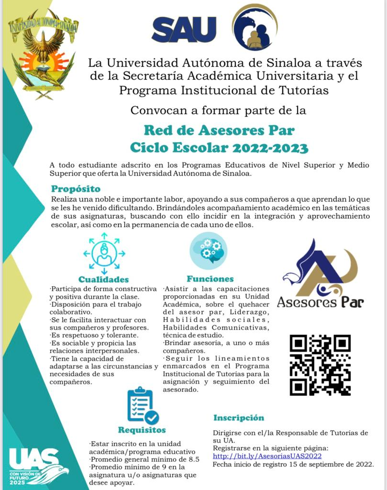

Red de Asesores Par Ciclo Escolar 2022 - 2023 La Unidad Académica de Gastronomía y Nutrición Mazatlán invita al alumnado a formar parte de la Red de Asesores Par. Revisa los requisitos e Inscríbete en el siguiente enlace: Asesorias UAS 2022 